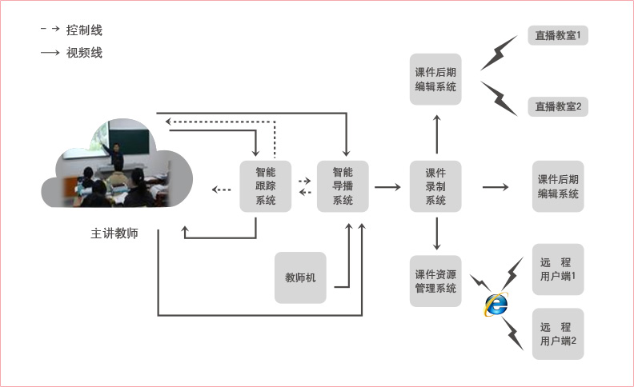
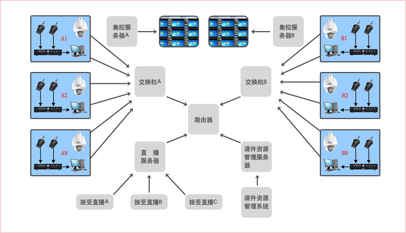
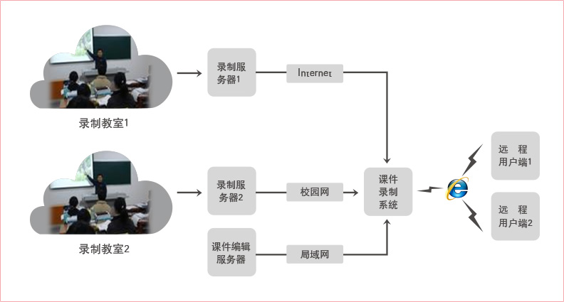

智能录播系统
系统概述
智能录播系统以图像分析与处理技术为核心，集多媒体技术、流媒体技术、自动控制技术和模式识别技术于一体，实现课程的全自动、智能化录制。
智能录播系统为用户提供了课程录制、直播、点播、编辑、管理的一系列应用解决方案，最终形成全自动、智能化的课程资源建设和应用平台。
系统结构图

系统功能模块
- 课件录制：通过收集教师授课视频、学生听课视频、授课电脑VGA信号、板书画面、现场音频信息，自动生成标准课件资源。
- 智能跟踪：智能视频分析算法，结合人工智能和模式识别技术，实现教师自动跟踪和学生站立识别。
- 智能导播：可以智能切换多路视 频信号源，具有多媒体数据实时切换与录播功能，实现了调音台、切换台、字幕机等功能。
- 课堂直播：通过IP网络，例如局域网、互联网、卫星网，将课堂内容直播出去，课堂内容包括音频、视频以及计算机屏幕内容，接收 端通过IE浏览器即可收看直播课堂内容。
- 课件点播：自动上传课件资源到资源管理服务器，可以对课件资源进行编目、统计等统一管理，并实现课件的远程点播。
- 课件后期编辑：对基于课件录制系统生成的课件进行后期编辑，能编辑主流的流媒体文件，添加对应的索引，实现了课件屏幕、音频、视频、字幕的同步编辑与输出。
系统性能特点
- 全高清视频录制：系统可以采集一至三路音视频信号和一路VGA信号，轻松实现高清视频采集，符合国家精品课程的录制视频画质要求
- 课件模板多样化：支持三分屏、四分屏、电影画面、画中画、双视频等多种模式课件，满足用户多样化需求
- 跟踪系统手、自一体化：系统在智能跟踪系统之上，集成手动跟踪功能，在课件录制过程中，可自由切换智能跟踪或手动跟踪
- 全场景智能跟踪：跟踪系统不需要人员参与任何操作，实现全自动智能跟踪，真正满足常态化教学要；精确定位和跟踪目标，始终如一地对教师进行智能跟踪拍摄，保证跟踪目标不丢失
- 导播输出双路视频：导播系统支持多达六路的输入信号源，导播系统可以从多路输入信号中选择输出两路视频数据，生成独有的双视频课件或四分屏课件
- 多频道直播：直播服务器可以设置多个直播频道，每个直播频道对应一个录制端的发布信息；远程用户可以自主选择任一直播频道，方便直观地收看不同教室的直播课程
集控录播系统
系统概述
集控式录播系统可以实现多间教室同时录制并生成课件，成为网上可实时直播、点播的学习资源，真实再现课堂教学的全过程
系统结构图

系统性能特点
- 统一管理：只需要一位操作人员通过操作集控式录制系统的服务器就可以对所有的教室进行统一管理
- 集成监控：可以使用单分区、四分区、六分区、九分区、十六分区等不同视图同时监测多路画面，并能够通过控制云台全方位监控各个教室
- 集中控制：可以对多间教室同时进行课件录制，在系统服务器端统一实现课件录制相关操作，并且能够在服务器端实时生成课件
课件资源管理系统
系统概述
自动上传课件资源到资源管理服务器，可以对课件资源进行编目、统计等统一管理，并实现课件的远程点播。
系统结构图

系统性能特点
- 支持多种格式课件的管理
- 系统支持元数据注入编目标准
- 支持三分屏、四分屏等课件的管理和点播
- 资源入库可采用远程批量上传和拖拽上传方式，支持断点续传
- 系统支持复读功能，可以便捷的对重点内容进行连续重放
- 支持片段下载功能，在观看资源的同时可将需要的部分截取保存
- 可以对资源进行审核和分权限管理，支持管理权限多级授权
- 资源分权显示和防盗链，以防止核心资源外流
- 独有的资源编目管理，提高资源检索效率
- 自有资源列表可方便教师备课和学生学习
- 同时支持页面播放和客户端播放
- 实现区域资源检索与共享
- 可支持多人同时在线自主学习
- 支持教师进行教学质量评价及教学反馈
联想携手新晨（易捷）提供最优秀的智能录播解决方案，该方案已经成功应用于
- 精品视频公开课建设
- 远程教学，课堂直播
- 教学管理，教学评估
- 班班通、校校通工程
- 课程资源库建设
- 课件点播，视频点播
- 教法训练，教学演练
- 视频会议系统